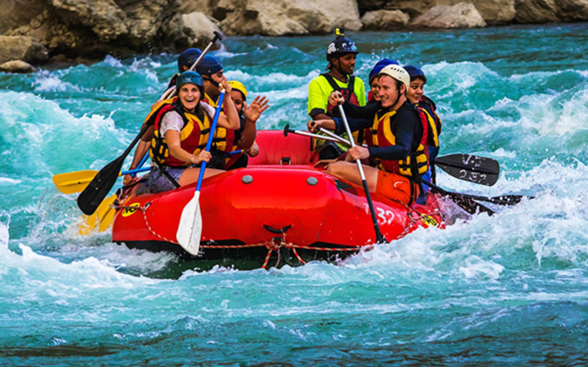
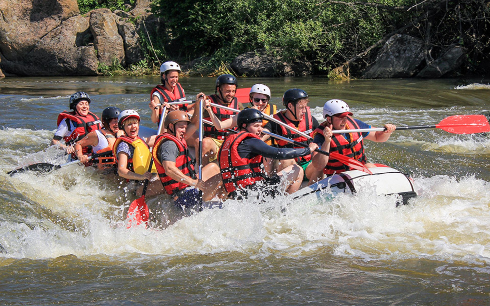
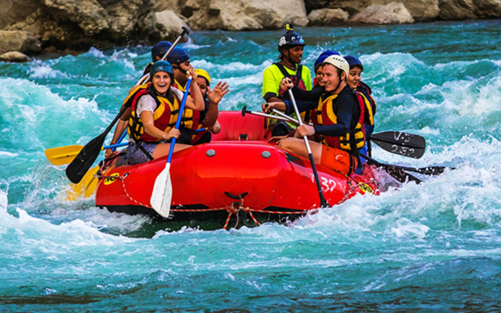
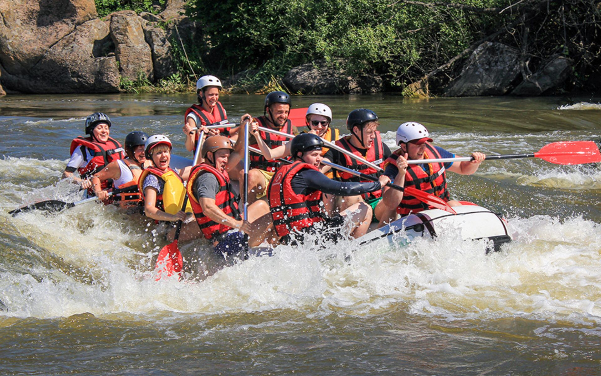

We are a passionate white water rafting company dedicated to offering exciting and memorable adventures on some of the most beautiful and challenging rivers in the country. Our commitment to safety, fun and connection with nature is what drives us. At Rafting Life, we pride ourselves on sharing the thrill of rafting with people of all ages and experience levels, giving them the opportunity to explore natural beauty in unique ways.


 


